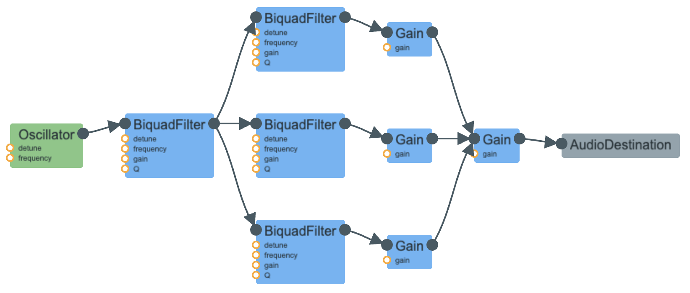

I aimed to recreate human vowel sounds, taking inspiration from Farnell's Chapter on mammal sounds. The main
characteristic of human sounds are the 3 formants, which is why I created 3 bandpass filters. I then created
another biquad filter to connect to each formant, and a gain node to connect to each filter's gain node. This
is to make connections from the oscillator, to the filters, and to the destination easier.
Farnell's chapter also included a table of frequencies for each formant according to a specific vowel sound, as
shown on this page. I took these frequency values, added them to a dictionary, and created a list of the words.
My design choices could be improved, since I relied on the specific ordering of words to associate with each button
that corresponds each sound. However, it seems okay in the context of this assignment because the focus is more on
the sound design.
